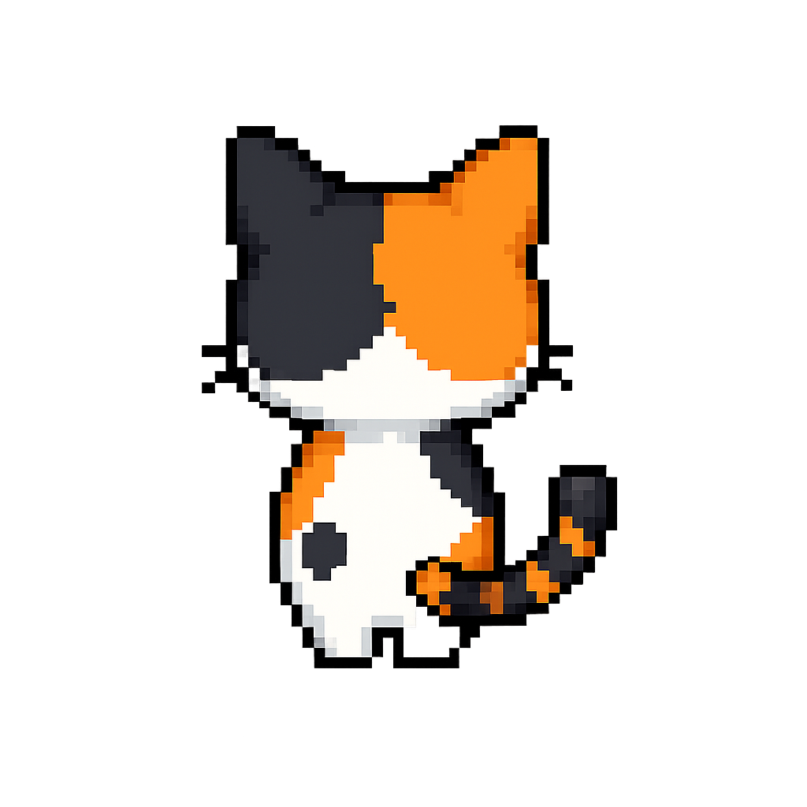
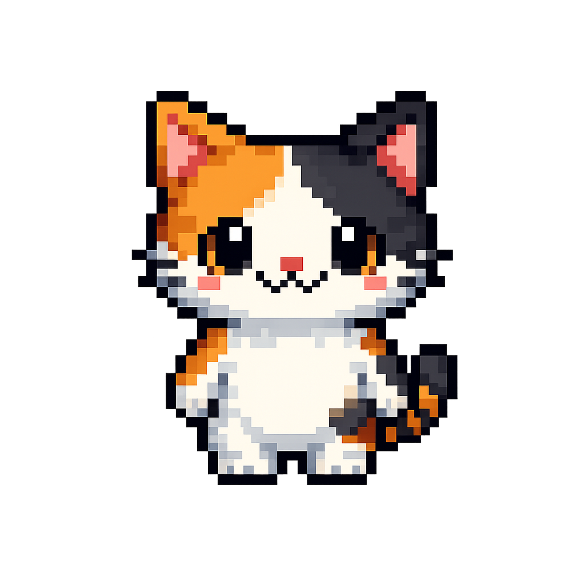
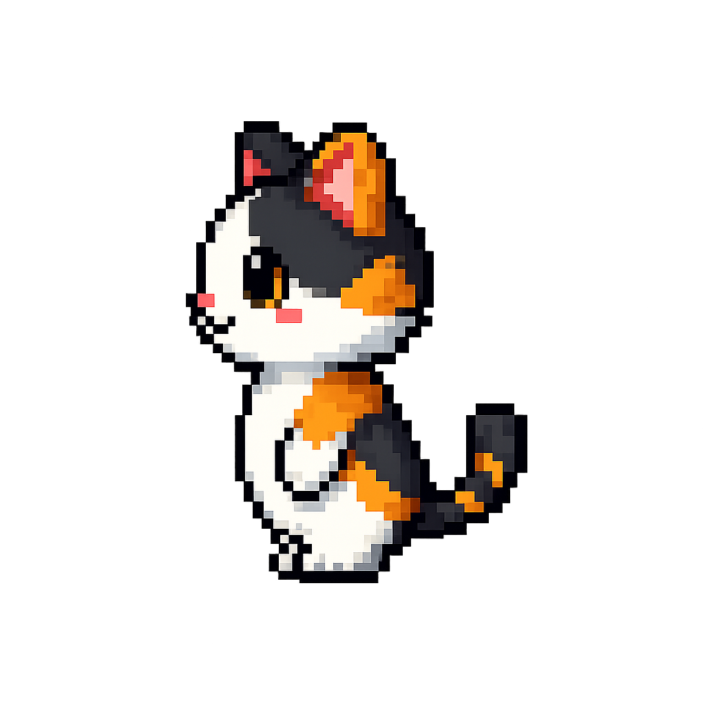
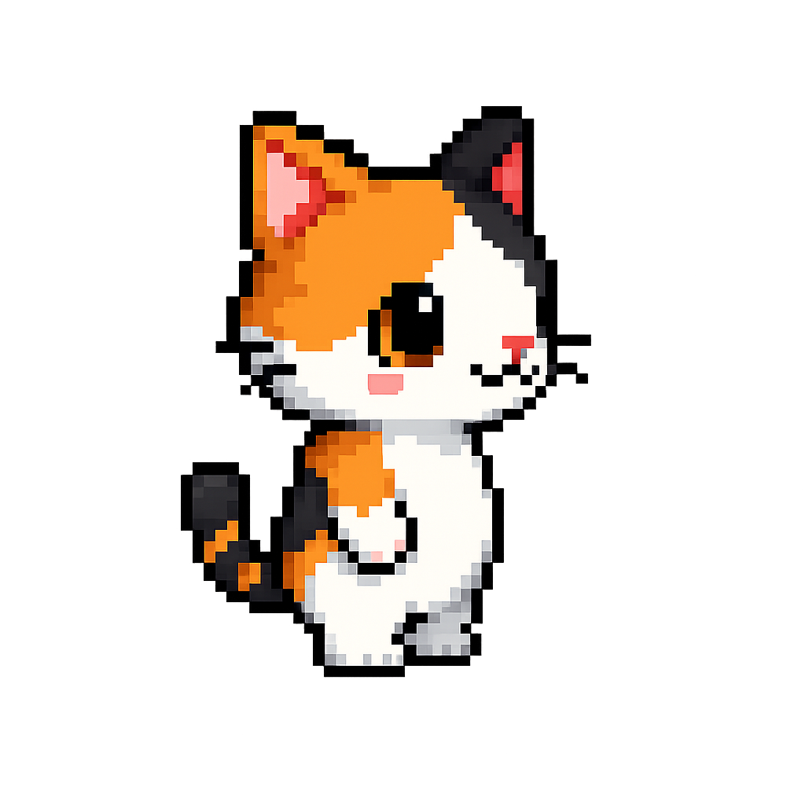

三毛猫をご飯の場所まで連れて行ってあげましょう！
三毛猫のキャラクターを動かし、ご飯が置かれているところまで案内してください。ご飯は画面の右下にあります。
〇STARTボタンについて
…新しい迷路を作成します。主に２回目の挑戦時に使うボタンですね。
三毛猫の位置も時間も元に戻りますので、最初から始めたいときに使ってみてください！
〇RESETボタンについて
…三毛猫の位置が最初のところに戻ります。迷子になったら使ってみてください！
〇時間の測定について
…このゲームでは時間を測定することができます！
・ただ迷路で遊びたいときは、そのままキャラクターを動かしてください。
・時間を測定したいときは、「時間を測定する」というボタンを押してください。
できるだけ短い時間でのゲームクリアに目指して遊ぶのも楽しそうですね！
ぜひ挑戦してみてください！



